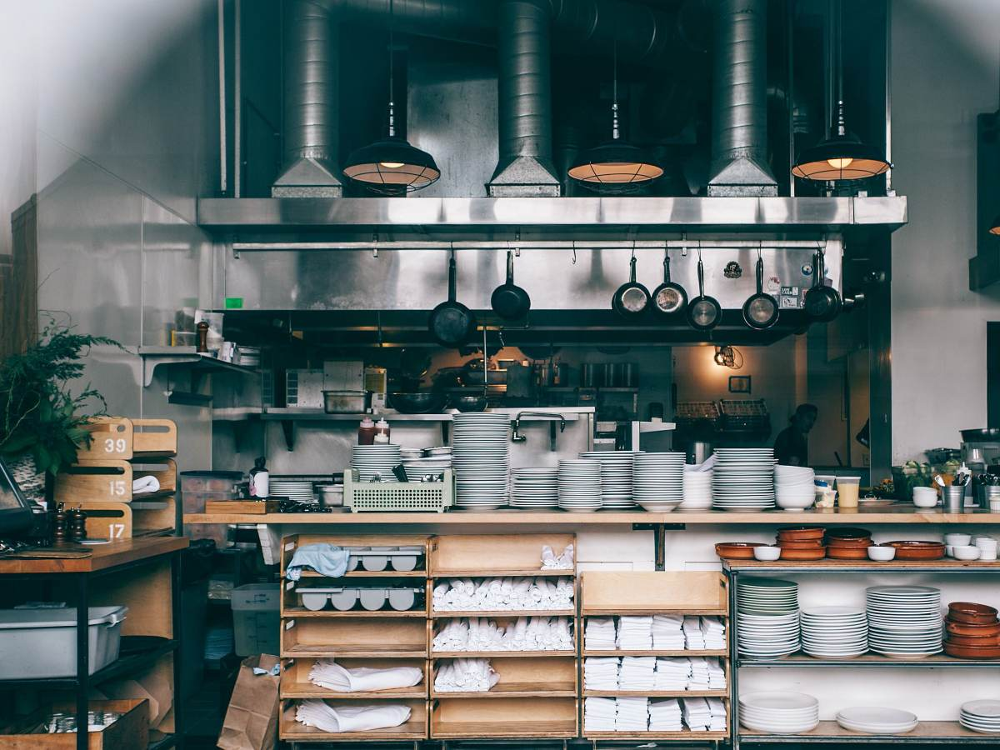
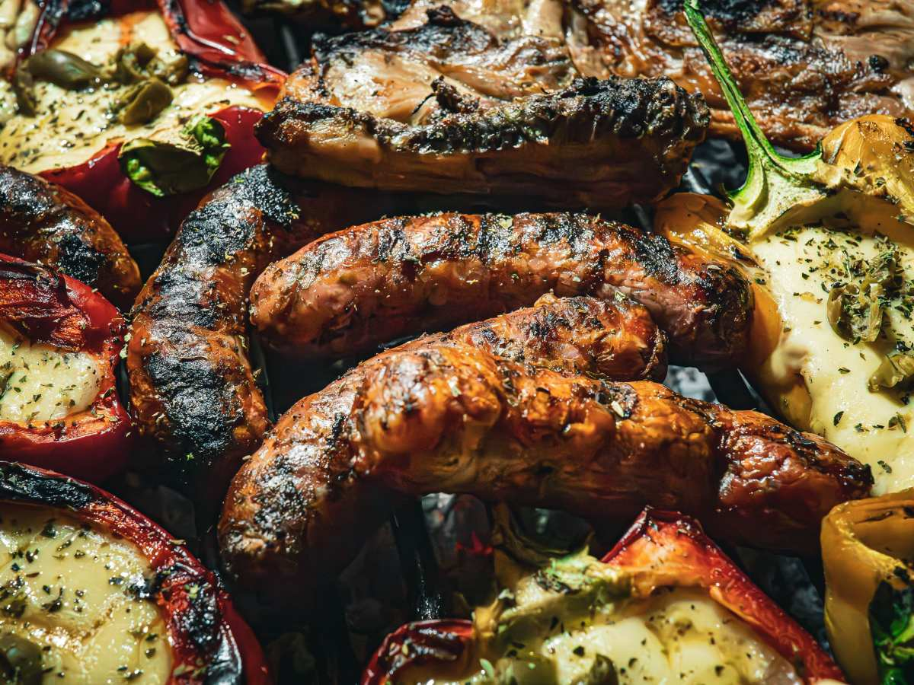
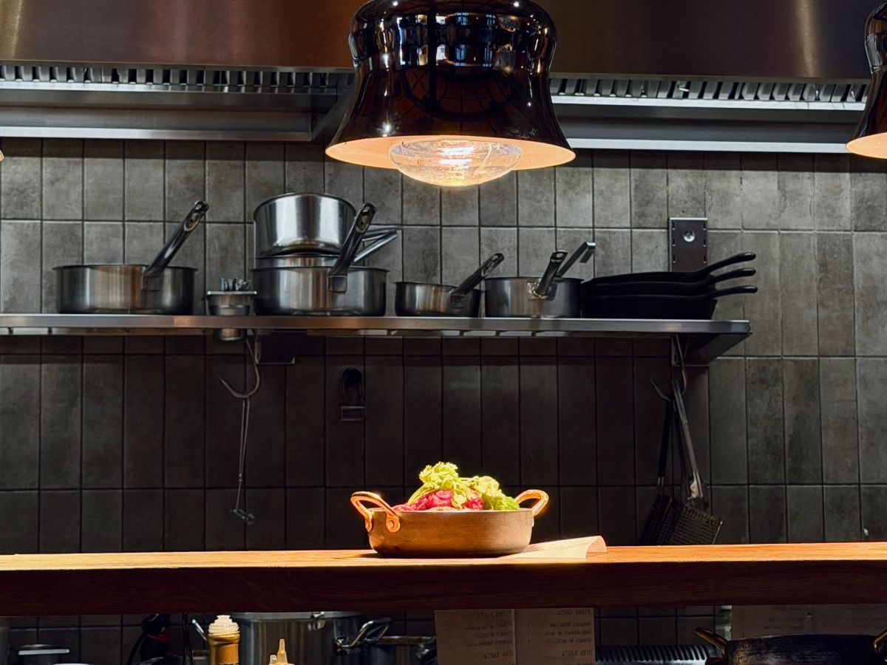
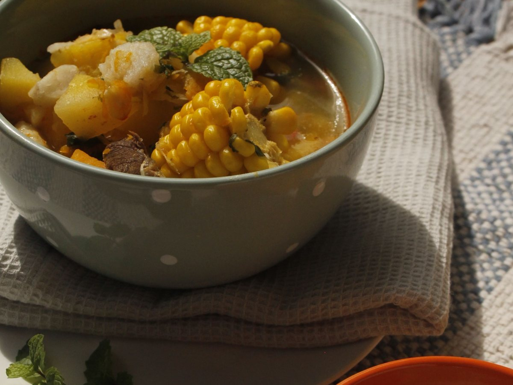
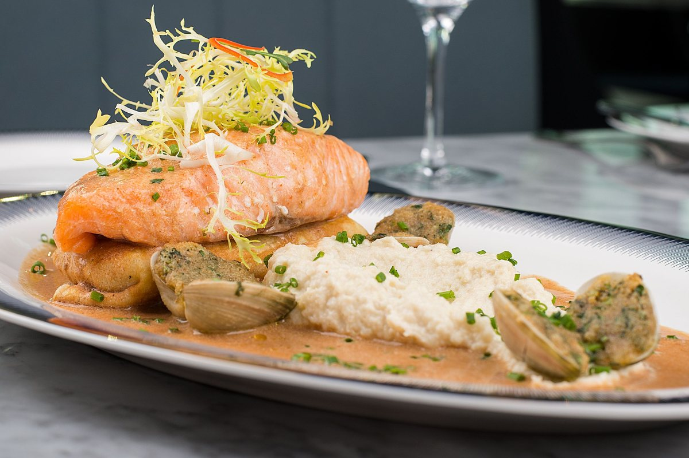
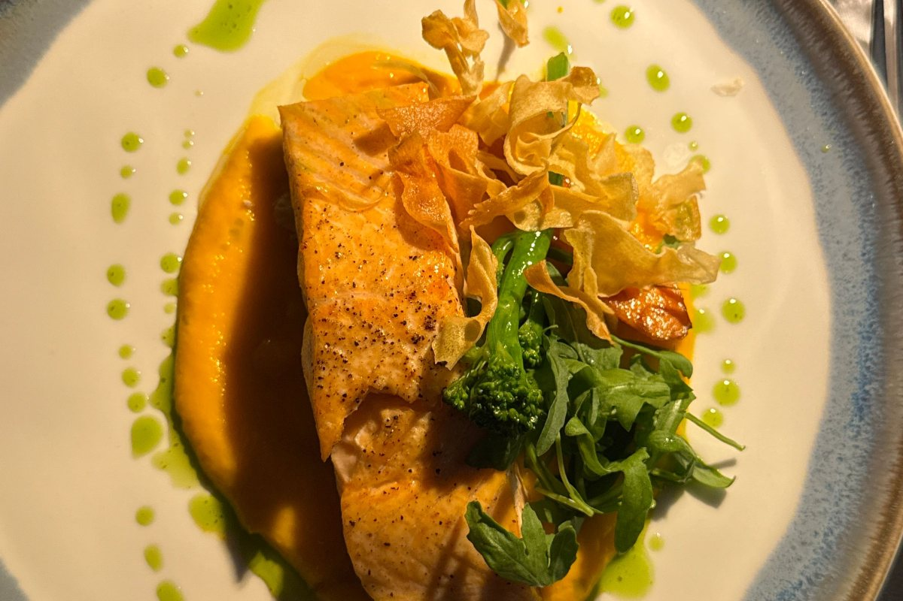
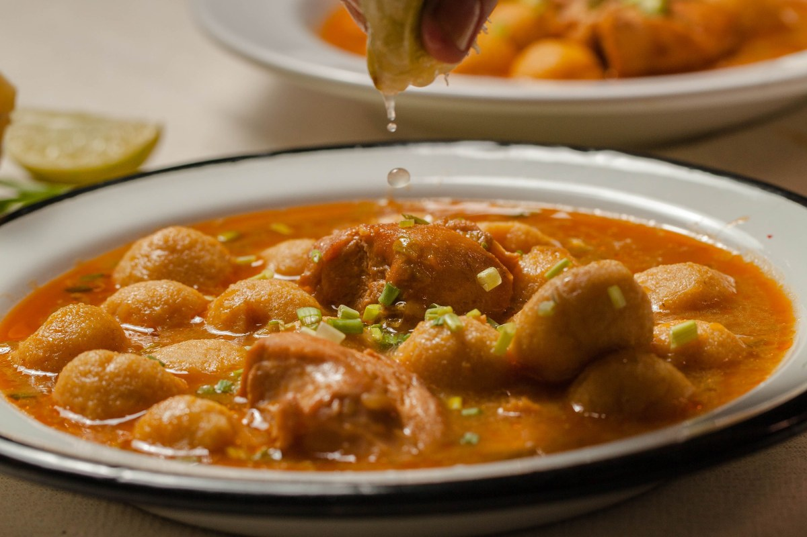
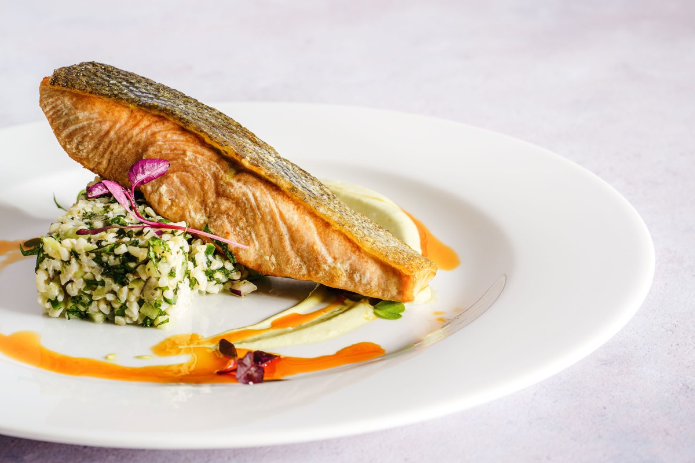
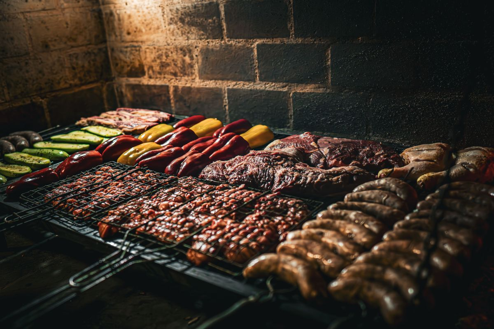
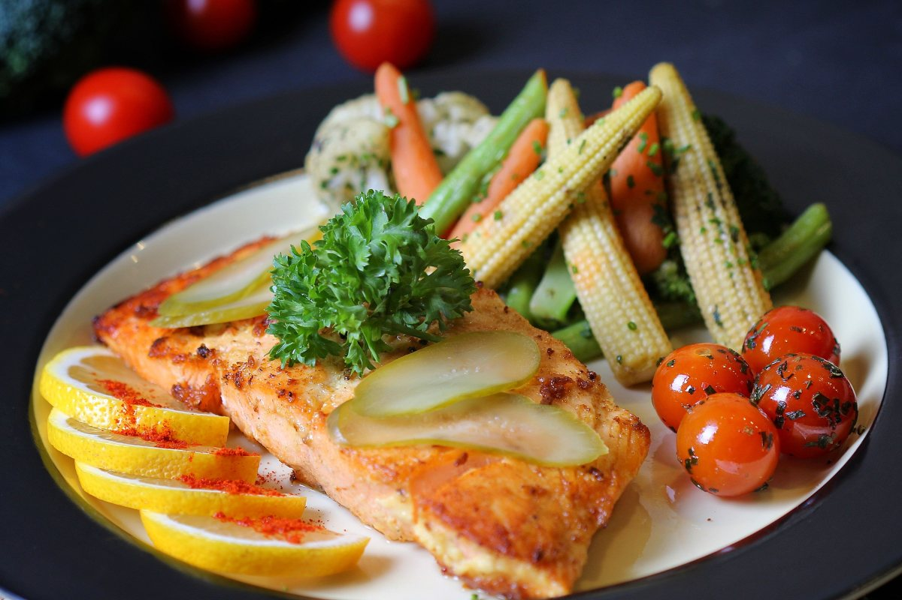

Restaurante · Panguipulli
Mil personas escribieron sobre esta mesa.
Y casi todas preguntan lo mismo: cómo pedir si vienen hartos.
- 1.000reseñas en Google
- 5cosas que avisar al reservar
- 2meses de temporada alta
- 0páginas donde leer esto hoy
Para el que organiza
Venimos hartos: cómo pedir
Una mesa de diez se arruina por cosas que se arreglan con un llamado el día anterior.
-

01
Avise el número
Diez no es una mesa: son dos unidas y media hora de trabajo antes.
-
02
Cómo van a pagar
Una cuenta o diez: dicho al principio no cuesta nada.
-

03
Por tandas
Algo para compartir mientras se decide el fondo.
-

04
Uno habla con el garzón
Uno, no cinco: lo que se pierde es lo dicho en el aire.
-

05
Alergias y niños
Al reservar, no con el plato servido.
Las ajusta el equipo del restaurante antes de publicar.
Un grupo grande es la mejor y la peor mesa del día.
Dicho antes, no después
En enero y febrero
- 01
Va a haber espera
Antes de las 20:30, menos.
- 02
La cocina tarda más
Hay treinta platos antes que el suyo.
- 03
Lo fresco se acaba
Pregunte qué queda al sentarse.
- 04
Pida la verdad
Un «media hora» honesto vale más.
Los reales los sabe el restaurante.
La diferencia es un llamado de dos minutos el día anterior.
La mesa de doce
A la mesa
Cocina chilena, del lago






Fotos de referencia: los platos de la casa los pone el restaurante.
Dónde estamos
Martínez de Rosas 639
- Dirección (Tripadvisor)
- Martínez de Rosas 639, Panguipulli
- Teléfono
- 63 231 2395
- Reseñas
- 1.000 en Google
- Horario
- Falta el horario
Si son más de seis, reserve el día anterior y pregunte por estacionamiento.
Martínez de Rosas 639, Panguipulli Abrir en Google Maps
Para el dueño
Qué es real y qué falta
Lo verificado
El nombre, el teléfono, las mil reseñas y la dirección que publica Tripadvisor.
Lo de ejemplo
Las cinco recomendaciones para grupos y los horarios de temporada.
Lo que falta
El horario, los platos de la casa y las fotos del salón.